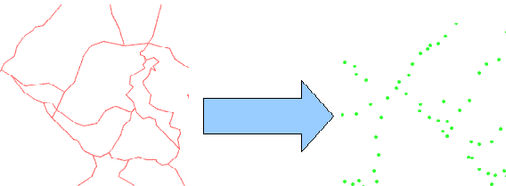

Reduce to points
Reduces lines and polygons of the input layer to points by extracting only the feature vertices.

A cluster tolerance must be specified for snapping all points in the specified radius to the same vertex.